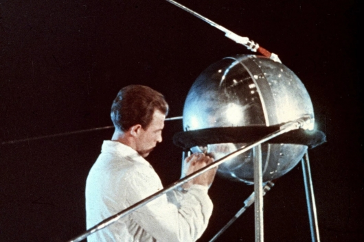
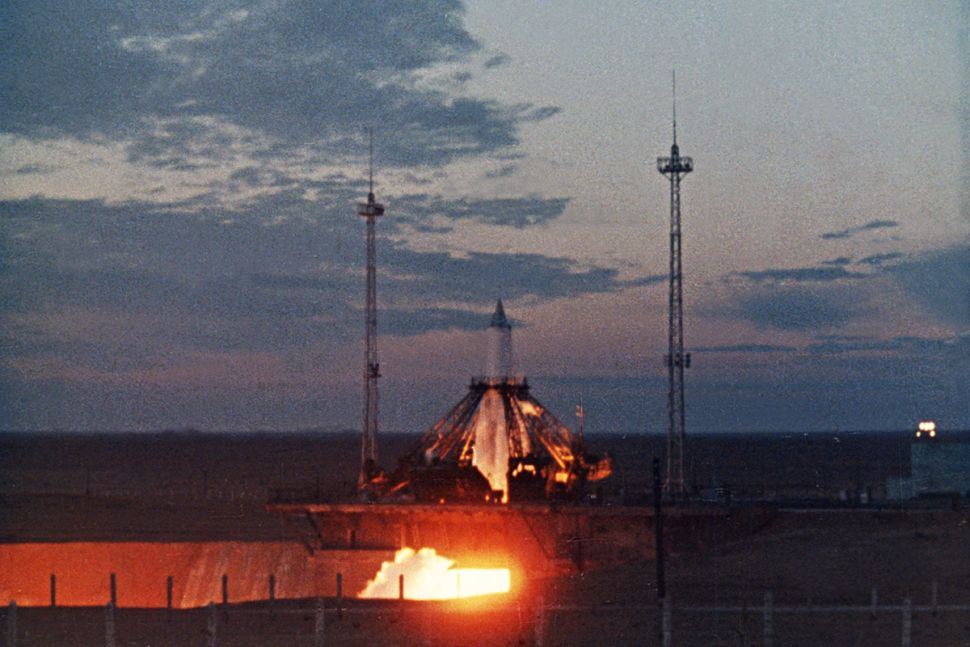
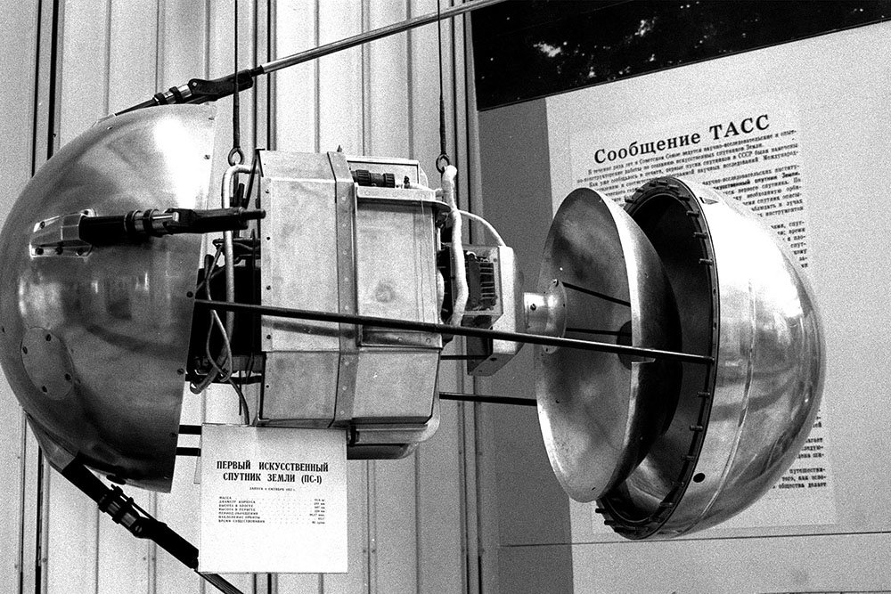
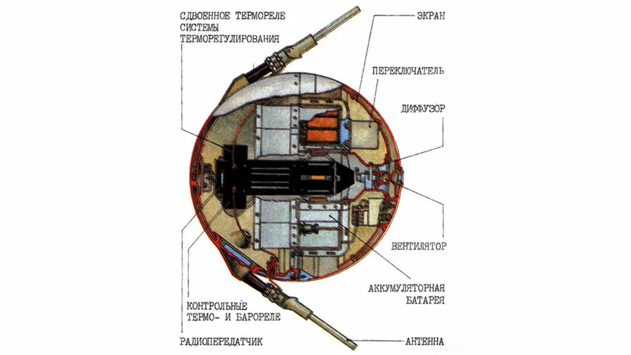

Космические исследовательские миссии
Архив космических миссий
Архив космических миссий

«Спутник-1» — первый в мире искусственный спутник Земли, советский космический аппарат, запущенный на орбиту 4 октября 1957 года. Кодовое обозначение спутника — «ПС-1» («Простейший Спутник-1»). Запуск был осуществлён с 5-го научно-исследовательского полигона Министерства обороны СССР «Тюра-Там» (получившего впоследствии открытое наименование космодром «Байконур») на ракете-носителе «Спутник», созданной на базе межконтинентальной баллистической ракеты «Р-7». Над созданием искусственного спутника Земли, во главе с основоположником практической космонавтики С. П. Королёвым, работали учёные М. В. Келдыш, М. К. Тихонравов, М. С. Рязанский, О. Г. Ивановский, Н. С. Лидоренко, Г. Ю. Максимов, В. И. Лаппо, К. И. Грингауз, Б. С. Чекунов, А. В. Бухтияров и многие другие. Дата запуска «Спутника-1» является началом космической эры человечества, а в России ежегодно отмечается как памятный день Космических войск. В честь первого искусственного спутника Земли названа равнина на поверхности Плутона (название официально утверждено Международным астрономическим союзом 8 августа 2017 года).
В пятницу, 4 октября, в 22:28:34 по московскому времени (19:28:34 по Гринвичу) был совершён успешный запуск. Через 295 секунд после старта ПС-1 и центральный блок (II ступень) ракеты весом 7,5 тонны были выведены на эллиптическую орбиту высотой в апогее 947 км, в перигее 288 км. При этом апогей находился в южном, а перигей — в северном небесном полушарии. Через 314,5 секунды после старта произошли сброс защитного конуса и отделение Спутника от II ступени ракеты-носителя, и он подал свой голос. «Бип! Бип!» — так звучали его позывные. На полигоне их ловили 2 минуты, потом Спутник ушёл за горизонт. Люди на космодроме выбежали на улицу, кричали «Ура!», качали конструкторов и военных. И ещё на первом витке прозвучало сообщение ТАСС: «В результате большой напряжённой работы научно-исследовательских институтов и конструкторских бюро создан первый в мире искусственный спутник Земли».
Только после приёма первых сигналов Спутника поступили результаты обработки телеметрических данных и выяснилось, что лишь доли секунды отделяли от неудачи. Перед стартом двигатель в блоке Г «запаздывал», а время выхода на режим жёстко контролируется, и при его превышении старт автоматически отменяется. Блок вышел на режим менее чем за секунду до контрольного времени. На 16-й секунде полёта отказала система опорожнения баков (СОБ), и из-за повышенного расхода керосина центральный двигатель отключился на 1 секунду раньше расчётного времени. По воспоминаниям Б. Е. Чертока: «Ещё немного — и первая космическая скорость могла быть не достигнута. Но победителей не судят! Великое свершилось!».
Наклонение орбиты «Спутника-1» составляло около 65 градусов, это означало, что «Спутник-1» летал приблизительно между Северным полярным кругом и Южным полярным кругом, вследствие вращения Земли за время каждого витка смещаясь на 24 градуса по долготе. Период обращения «Спутника-1» первоначально составлял 96,2 минуты, затем он постепенно уменьшался ввиду снижения орбиты, например, через 22 дня он стал меньше на 53 секунд.
Изучение характера радиосигнала и оптические наблюдения за орбитой позволили получить важные научные данные. Задача оптического наблюдения ИСЗ была поставлена коллективу Государственного астрономического института имени П. К. Штернберга МГУ. В. Г. Куртом, П. В. Щегловым и В. Ф. Есиповым разработана методика наблюдений с точным определением координат спутника с временно́й привязкой. Для этой цели была приспособлена аэрофотосъёмочная камера НАФА с 10-сантиметровым объективом, точные промежутки времени измерялись морским хронометром с электрическими контактами. После проявки плёнки треки спутника с помощью измерительного микроскопа «привязывались» к координатам звёзд, затем вручную (на механических счётных машинах) определяли шесть параметров орбиты.
Время пересчёта занимало 30—60 минут. Фотографические наблюдения орбиты «Спутника-1» проводились ежедневно, в течение двух недель В. Г. Куртом и П. В. Щегловым в Ташкенте, из астрономической обсерватории АН Узбекистана. Характер изменений орбиты позволил произвести предварительную оценку величины плотности атмосферы на орбитальных высотах, её высокое значение (порядка 108 атомов/см³) стало для геофизиков большой неожиданностью. Результаты измерения плотности высоких слоёв атмосферы позволили создать теорию торможения спутников, основы которой были заложены М. Л. Лидовым. Сразу же после запуска на это событие обратил внимание коллектив шведских учёных из только что созданной Геофизической обсерватории Кируны (ныне Шведский институт космической физики). Под руководством Бенгта Хултквиста проводились измерения суммарного электронного состава ионосферы с использованием эффекта Фарадея. При последующих запусках спутников подобные измерения были продолжены.
Спутник летал 92 дня, до 4 января 1958 года, совершив 1440 оборотов вокруг Земли (около 60 млн км), а его радиопередатчики работали в течение трёх недель после старта. Из-за трения о верхние слои атмосферы спутник потерял скорость, вошёл в плотные слои атмосферы и сгорел вследствие трения о воздух. Большая по размеру и менее плотная вторая ступень ракеты-носителя «Спутник» (известная также под обозначением «SL-1 R/B») сошла с орбиты раньше спутника, 1 декабря 1957 года, совершив 882 оборота вокруг Земли.



